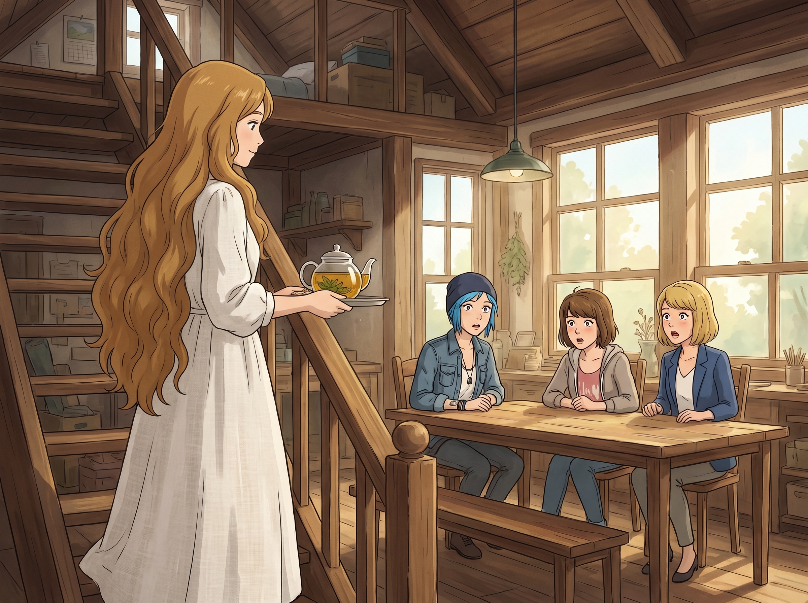
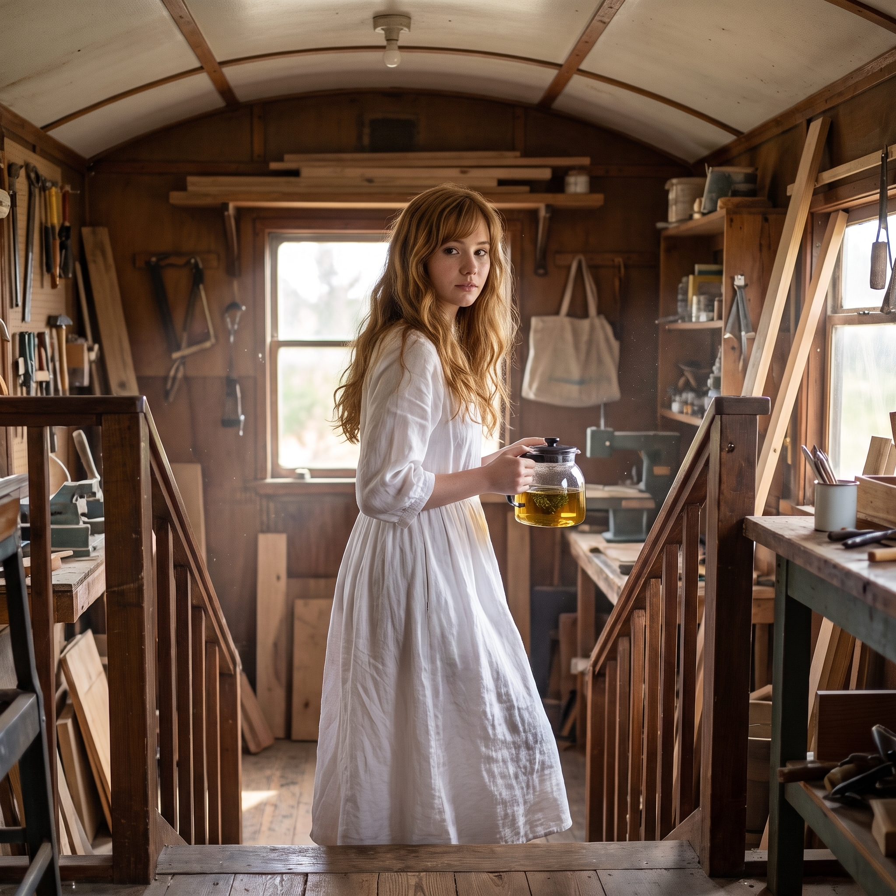

解封的金色波浪


某個週末午後，Kate 剛洗完頭髮，因為頭皮有些發緊，便隨手拆下了常年固定在腦後的黑色髮夾。
那頭柔軟的金褐色長髮如瀑布般傾瀉而下，長度竟然一直垂到了腰際上方，帶著天然的微捲弧度與淡淡的洋甘菊洗髮水香氣。當她穿著寬鬆的白棉麻長裙、端著一壺剛泡好的冷萃花茶從閣樓走下來時，工坊長桌前原本熱鬧的三人瞬間陷入了長達五秒鐘的集體當機。
一、三人當下的第一反應
Max 當時正咬著筆蓋畫手帳，抬頭看見一個長髮飄逸、仙氣四溢的女孩走過來，手裡的筆直接「啪嗒」掉在桌上。她整個人直接從椅子上彈了起來，眼鏡差點滑掉：「天啊……Kate？！妳的頭髮居然有這麼長？！這光澤感簡直像十九世紀拉斐爾前派油畫裡的森林精靈！！」話還沒說完，Max 已經以本能般的敏捷抓起掛在胸前的相機，瘋狂尋找順光角度。
Chloe 手裡正拿著扳手給零件上油，轉頭看見這一幕，手一滑，金屬扳手「當啷」一聲砸在鐵桌上。她瞪圓了眼睛，吹了個響亮的口哨，大步走上前圍著 Kate 轉圈打量：「哇哦……Marsh！妳平時把這頭金絲藏在那個老古董髮髻裡，是在對全人類的美學進行犯罪嗎？！妳現在看起來像個能一巴掌超度整座波特蘭的北歐女神！」
Victoria 剛端起骨瓷茶杯，眼神掃過 Kate 的長髮後，瞳孔劇烈收縮。她直接放下茶杯大步跨過來，伸出纖細的手指輕輕托起 Kate 的髮梢，指尖感受著髮質的柔軟度，語氣裡滿是難以置信與狂喜：「完全沒有經過化學燙染的天然原生冷金棕……髮尾居然連一根分叉都沒有？！Marsh，妳到底用了什麼護髮油？」
二、Kate 的害羞與溫柔轉變
平時習慣了用髮髻將自己包裹起來、維持低調與端莊的 Kate，被三個人圍在正中央誇得滿臉通紅。
她下意識地想抬手把頭髮重新挽起來，眼神有些羞怯：「唔……因為從小家裡就要求頭髮必須整理得非常規矩，不能顯得散漫……剛才只是洗完頭想讓它自然乾透而已……是不是看起來太邋遢了？」
「邋遢個鬼啊！」Chloe 一把按住 Kate 試圖找髮夾的手，笑得肆意張揚，「老娘以二號車廂首席機械師的名義宣布，那些破髮夾今天正式被全數沒收！」
三、二號車廂的午後長髮沙龍
這個原本用來修車和畫圖的下午，徹底演變成了四個人的專屬美學狂歡。
Victoria 罕見地親自動手，從她的化妝箱裡搬出昂貴的純銀發梳與絲綢緞帶，一邊嘴上說著「我只是看不慣粗糙的打理」，一邊極其溫柔地幫 Kate 將兩側的長髮編成優雅的法式半披肩編髮，甚至在髮縫間點綴了幾朵 Kate 自己種的小白菊。
Max 徹底進入了藝術家暴走狀態，拉著 Kate 在工坊推拉門的大天窗前、舊鐵軌的綠植牆邊拍了整整三卷大畫幅底片，嘴裡念叨著「這張必須洗成巨幅掛在工坊正門」。
Chloe 乾脆直接跑到車床前，用剛才做剩下的黃銅邊角料，花了二十分鐘親手旋壓、拋光出了一枚鏤空的小烏鴉髮簪，粗魯又小心地插在 Kate 的髮間：「拿著，這叫重工業神聖守護簪。」
長髮披散下來的 Kate，不再是阿卡迪亞灣那個被道德枷鎖死死困住的脆弱女孩。
當微風從舊鐵道吹進車廂，金色的長髮在陽光下輕輕揚起，鏡子裡的女孩看著身邊大笑拍照的同伴，終於露出了她人生中最舒展、最自信的明媚笑容。